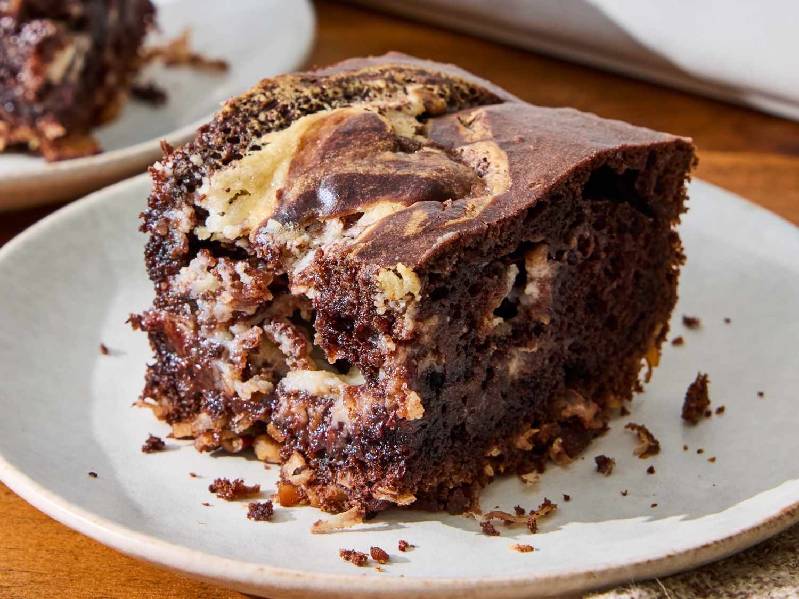

This German chocolate dump cake tastes like the real thing, but batter, filling, and topping elements are all baked together. It has the pecan and coconut flavors you expect, and the cream cheese swirl carries the frosting flavor. It’s nicely moist, and you get crunchy bits—really enjoyable.
